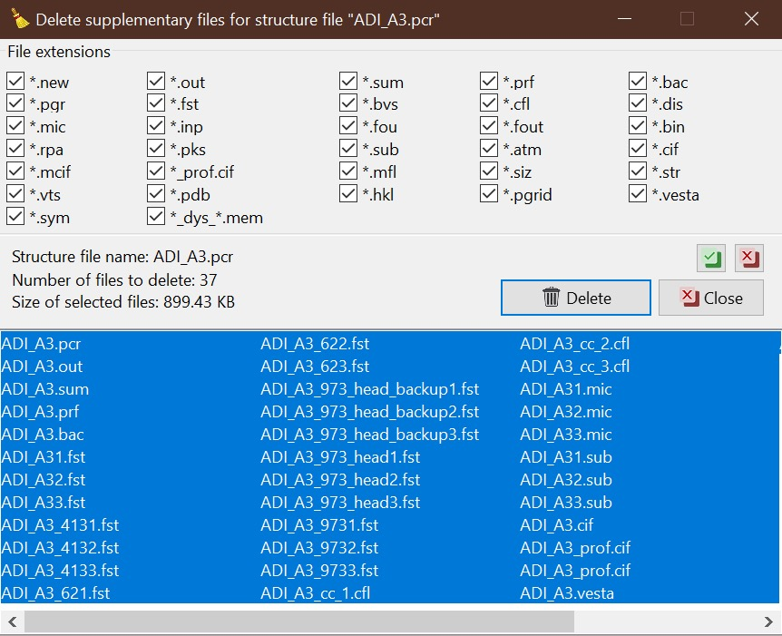

Main form¶
The GetControl main form contains several main parts: Menu and Toolbar, Files list box, Information pages with various tabs, FP applications panel, and Supplementary files button bar, which are described in more detail below. The main form appears at the start of the application.
{kind=link}
Main GetControl window. Green - Menu and Toolbar, Red - Information pages, Blue - Files list, Pink - FP applications, Black - Supplementary files¶
How to start¶
To start using the GetControl, go to the menu File->Open Directory, use the Ctrl(⌘)+O or Drag&Drop any file from your working directory (it doesn’t need to be a PCR file). The application will search all the PCR files in the selected directory, sort them in the Files list and automatically load the info from the first PCR file.
Menu and Toolbar¶
Menu and Toolbar provide quick access to the application functions, visualisations and other tools.
Most of the Menu items have their corresponding Toolbar buttons. Below is the list with a quick explanation:
- File
-
Open directory(Ctrl(⌘)+O)It enables you to select your working directory, where it searches for the PCR files (sub-directories are not included).
Reload folder(F4)It again searches for the PCR files in the working directory (use when you copy/add/delete the PCR files).
Recent directoriesIt shows the list of 10 previously used directories.
Delete file(Ctrl(⌘)+D)It deletes the selected PCR file and all supplementary files; the form, when you can filter by extension what to delete, will pop up (see Note below).

Editor(Ctrl(⌘)+E)It opens the internal Editor or external (see Pref->General setup tab) editor.
Toggle Form/Editor View(F12)Switch between Main and Editor form. The same button functionality you will find on the Editor form.
New instance(Shift+F1) [3]It opens the new instance of the GetControl application.
Exit(Ctrl(⌘)+Q) [3]It closes the application
- Edit

Clear supplementary files(Ctrl(⌘)+Y)It will allow you to delete particular supplementary files (the new form where the filer can be selected will pop up; see Note below) for the selected PCR file (it can free the space on your disk).
Clear supplementary files for ALLThe same as above, but now it applies to all the PCR files in the working directory.
Backup structure(Ctrl(⌘)+B)It backups the selected PCR file together with the supplementary files by adding -backup (by default) to their file name; see Pref->General setup tab to allow your own selection of the suffix/name.
Rename structure(Ctrl(⌘)+R)It renames the select PCR file with all supplementary files.
Preferences(Ctrl(⌘)+,)It opens the Preferences form.
- View
-
Phases info(Ctrl(⌘)+1)It shows/switches to the Phases info tab.
Profile parameters(Ctrl(⌘)+2)It shows/switches to the Profile parameters tab.
Refinement summary(Ctrl(⌘)+3)It shows/switches to the Refinement summary tab.
Profile viewer(Ctrl(⌘)+4)It shows/switches to the Profile viewer tab.
Microstructure viewer(Ctrl(⌘)+5)It shows/switches to the Microstructure viewer tab.
Reload(F5)It reloads structure information from the selected PCR file.
{kind=link}
{kind=link}
{kind=link}
{kind=link}
{kind=link}
{kind=link}
{kind=link}
{kind=link}
{kind=link}
{kind=link}
{kind=link}
{kind=link}
{kind=link}
{kind=link}
{kind=link}
{kind=link}
{kind=link}
{kind=link}
{kind=link}
{kind=link}
- Export [4]
-
"Phases info" TAB separationIt copies to the clipboard information about all the phases from the Phases info tab; atomic positions are separated by TAB.
"Phases info" in LatexIt exports to the clipboard information about all phases from the Phases info tab in the Latex table format.
Fraction and Cell for activeIt copies to the clipboard the name, fraction and cell parameters separated by TAB for all the phases in the one currently selected PCR.
Fraction and Cell for selectedIt copies to the clipboard the name, fraction and cell parameters separated by TAB for all the phases in all selected PCR; it is easy to paste to worksheet-like software for quick plotting of the cell parameter evolution.
Python script for SXY plotterIt opens the form when you can adjust the command for the Python script, which allows you to plot the pattern(s).
Python script for MIC plotterIt opens the form when you can adjust the command for the Python script, which allows you to plot the Williamson-Hall plot to visualise the microstructure.
- Tools
-
Measure distance(Ctrl+M)The tools to measure different distances on the pattern chart; an additional form opens to select the measurement along various axes and visualise the results (see Profile viewer).

Open Terminal(Ctrl+T) [3]It will try to open the default system terminal.
Open COD[3]It opens the web page of the Crystallographic Open Database (COD).
- Help
-
Check for update(F2)It opens the dialogue to check the availability of the new version and the updating process.
What is newIt opens the update information changelog in the editor. The same information you can find here.

FullProf News(Ctrl(⌘)+Alt+M)It opens in the editor the FullProf changelog (information from the year 2000 onwards)

FullProf Manual(Ctrl+Shift+M)It opens the FullProf manual (PDF file from 2000) in the default viewer.
Write debug logIt enables/disables to write the debug log in the config directory. By default, it is switched off.
{kind=link}
{kind=link}
{kind=link}
{kind=link}
{kind=link}
{kind=link}
{kind=link}
{kind=link}
{kind=link}
Note
The menu on the macOS systems is located in the system menu (top bar). The Preferences and About dialogs are located under GetControl main menu item as usual for the system.
Delete & Clear filter selection
{kind=link}
The form for delete/clear filter selection allows you to select types of files to delete. When the delete PCR function is selected, then the list also contains the PCR file. Otherwise, only supplementary files are shown. You can select even individual files from the list.
No IRF or data files are listed. Only be careful with the hkl filter when using the HKL file as an input.
Tip
When you use the Backup structure function with the enabled Ask for name when backup? (see Pref->General setup tab), it works like a backup and rename together.
Files list¶
In the Files list, all PCR files found in the working directory are listed. You can select the file by clicking the mouse or using the keyboard arrows. By right-clicking, you will have access to the selected functions dedicated to the currently selected PCR file (Delete file, Clear supplementary files, Reload, Backup, and Rename structure).
You can change the order of the PCR file by the click&drag method. It is particularly useful when the searched order is not the one you like. The order should be preserved even when you do the Reload directory, but it will be lost when you load the different directory and come back.
It is possible to select multiple files by holding Ctrl(⌘) and clicking. This is useful when you want to export Fraction and Cell for selected and then paste the parameters into the worksheet-like software for plotting.
Tip
The current working directory is shown in the status bar of the main application window.
The width of the list can be adjusted by drag&drop of the left side splitter.
Note
In macOS, the multi-file selection with ⌘ pressed works properly only when the selection starts from the bottom of the list.
Information pages (TABs)¶
Phases info tab¶
In the Phases info tab, the application collects various information about all phases. If OUT and SUM files exist, the errors, phase fraction, density, R-factors, site multiplicity, etc., are extracted as well and properly shown, then there is a comprehensive overview of your refinement. The unit cell composition and site fractions are also calculated.
The information for each phase is coloured based on the preselected pattern (see Pref->General setup tab). If it is too long, it can be folded at the phases or atom level (click the small rectangles on the left side of the text).
{kind=link}
Phases info tab¶
Tip
If you want to calculate the composition in the chemical formula format (by default, the composition of the whole unit cell is calculated), provide the number of formula units per unit cell (Z value -> input like Z=x where x is the integer number) in the PCR file just after the phase title. It will not affect any other keywords you can use with FullProf.
!------------------------------------------------------------------------------- ! Data for PHASE number: 1 ==> Current R_Bragg for Pattern# 1: 4.7090 !------------------------------------------------------------------------------- Fe2P - structural - 1 Z=3 magph2 ! !Nat Dis Ang Jbt Isy Str Furth ATZ Nvk More 8 0 0 0 0 0 0 423.0645 0 0
Profile parameters tab¶
In the Profile parameters tab, there are extracted some useful information about the profile for each phase as profile type, IRF used, profile parameters refined, etc. If the preferred orientation correction is used, the parameters are also listed here. If microstructure is calculated, a summary is provided for size and strain broadening (average strain/size parameters).
If the Ana parameter is set to 1, then also info about the sharpest reflection and some other analytical information is extracted together with the Effective number of reflections (see Attention below).
{kind=link}
Profile parameters tab¶
Information is sorted by phases and colourised with the same pattern as in the Phases info tab. In a multi-pattern setting, information for each pattern is connected with each phase.
Attention
The parameter Effective number of reflection should be greater than 4, meaning that you have more than four independent reflections per intensity affecting parameter. Otherwise, your refinement result may not be accurate.
Refinement summary tab¶
Refinement summary tab shows the information about the whole refinement, for example, Chi2, number of parameters and information about the last refinement run.
If the parameter Mat is set to 1, the list of correlated parameters is listed (only for correlation greater than 50%).
The following block contains information about the patterns (data file, pattern contribution, zero shift, etc.). It also, for each pattern, provides the R-factors and the Scor parameter. According to the FP manual, all the errors of the refinement should be multiplied by this Scor factor to obtain more realistic values. The GetControl can do it for you when you check out this option in the Pref->General setup. If done so, you will see the text (applied!) after the Scor value.
{kind=link}
Refinement summary tab¶
After all the pattern information, there is a list of potentially negative FWHM points. If your refinement is good, you should see nothing in the list.
Profile viewer tab¶
The Profile viewer tab visualises the PRF file with some advanced features. In a multi-pattern setup, there is a button for each pattern on the top of the tab to switch between them quickly. The hint when over the button provides information on the pattern radiation and file name.
Braggs are coloured with the same pattern as phases in the Phases info tab. The same applies when the phase contribution is calculated.
{kind=link}
Profile viewer tab¶
The layout of the Profile view, for example, the axis font size, etc., can be adjusted in the Pref->Profile chart setup tab.
Tip
To get the contribution for each phase, set the Ipr parameter to 3. Then, launch the FP refinement, and when you reload the file, the application will automatically search for the phase’s contributions and load them.
If you hang over the Bragg positions, a hint pops up to show the extensive information gathered from the OUT and PRF files about the pointed position.
{kind=link}
Bragg information¶
Axis manipulations¶
At the bottom of the tab, there is a drop-down menu to adjust the X and Y axis. For the X-axis, there is an option to plot in the original (2Theta/TOF), d or Q spacing. For the Y-axis, there is an option for the original, relative, relative with zero=Ymin and Square root. Next to those options, there are informative labels showing the position of the cursor in various units.
Tip
To easily compare results in the multi-pattern setup, set the X-axis in Q or d spacing and the Y-axis to relative with zero=Ymin. Then, you can switch between patterns and see how each pattern contributes to the same reciprocal space region. If you zoom in, the zoom region is preserved when you change the pattern.
Chart export¶
You can export charts in several ways. You can save the Profile viewer screen as a picture of various formats. You can save the data as an SXY file (header describes the meaning of the columns), import it to your favourite data plotting software, and do your own tricks. Or you can use the provided Python script - SXY plotter. All export features are available in the Menu and Toolbar -> Export.
{kind=link}
Example of the SXY plotter output¶
Measuring tool¶
When the Profile viewer is active tab, you can use the Measuring tool, which allows you to measure along X, Y or general directions. The info about the measured distances is visualised on the measuring tool form, which pops up when the tool is activated.
{kind=link}
Measuring tool example¶
Note
The ZOOM options will not work when Measuring form is visible. You need to use the Ctrl to enable it within the measuring mode or close the form.
Microstructure viewer tab¶
The Microstructure viewer tab is only visible when the microstructure effects are calculated and the IRF (instrument resolution file) is provided. In the default setting, it plots the Williamson-Hall (WH) plot. In the top part of the tab, you can select the appropriate phase or pattern. If the phase or pattern name is grey, it means that no microstructure has been implemented in the refinement for this phase/pattern.
If the asymmetric model of broadening is used, the chars of Maximum strain or Apparent size can reveal the directional feeling about the microstructure.
{kind=link}
Microstructure viewer tab¶
The layout of the Microstructure view, for example, the axis font size, etc., can be adjusted in the Pref->MIC chart setup tab.
Note
Microstructure viewer visualises the content of the MIC file created during refinement.
The WH plot can be plotted using the provided Python script - MIC plotter.
FP applications¶
The panel provides access to a quick launch of the selected FullProf applications.
- FullProf (shortcut F9)
Launching the FullProf (wfp2k) with the selected PCR file.
{kind=link}
- EdPcr (shortcut F10)
Open the selected PCR file with the EdPcr tool
{kind=link}
- WinPlotr (shortcut F11)
Opens the PRF file with the WinPlotr tool. This tool is not available on Unix-based systems.
{kind=link}
- WinPlotr2006
Opens the PRF file with the WinPlotr2006 tool.
- Symmcal
It opens the Symmcal tool for information about the space groups
- MagSymmCal
It opens the MagSymmCal tool for information about the magnetic space groups
- PowderPat
It opens the Powder Pattern Calculation tool. It can import CIF files and simulate the powder patterns for various settings and radiations, etc.
- FPT
It opens the FullProf Toolbar. Toolbar to access the settings and the programs of the FullProf Suite.
Caution
Those tools are available only when the FullProf path is properly set up in the Pref->General setup tab.
Supplementary files¶
The Supplementary files buttons’ bar provides easy access to the various supplementary files created during the refinement. You can edit them or launch additional tools (FPStudio, GFourier, etc.) with the proper input files and perform further analysis. The buttons act as single buttons or as a drop-down menu that appears when clicking to navigate in a more concrete action selection. If the button name is grey, it means that the supplementary file of the particular kind doesn’t exist.
- PCR (shortcut F6)
It opens the selected PCR file in the editor.
- OUT (shortcut F7)
It opens the selected OUT file in the editor.
- SUM (shortcut F8)
It opens the selected SUM file in the editor.
- DIS
If the distances/angles or BVS are calculated, the results are opened in the editor.
- MIC
If microstructure files are created, then it allows them to open, and if the 3D visualisation is initiated, then it allows it to be opened in the VESTA viewer. The MIC files are grouped by the phase name.
Tip
To enable the 3D visualisation of the microstructure, you need to put the parameter Jvi to 5 and have the IRF file defined. Note: Jvi is available only when More for selected phase is set to 1.
- FST
The FPStudio files can be opened and modified in the editor or directly opened by the FPStudio tool to visualise. The FST files are grouped by the phase name.
- INP
The GFrourier files can be opened and modified in the editor or directly opened by the GFourier tool to do the analysis. If the analysis is done, there will be items to access the output or to the Fourier maps visualisation (Realod the file or use F5 to see it).
- CFL
The files for BondStr tool. You can edit the input files in the editor or open them directly with the BondStr tool. If the analysis is done by the tool, there will be access to the results and visualisations (BVS maps, etc.) (Realod the file or use F5 to see it).
- CIF
If CIF files are created and a viewer is provided (see Pref->General setup tab), then there is access to directly open the created CIF file.
- Dys
If the input files for Dysnomia (MEM analysis) are created, there is access to open the input files in the editor or to launch the analysis directly and, after the analysis is done, to visualise the outputs and Fourier maps.
Tip
To enable the creation of the Dysnomia (MEM analysis) input files, set the parameter Fou to 6. Consult the Dysnomia web for more information and help.
- CC
The crystallographic calculations input files. First, you need to create the CC files for your PCR file by clicking Create CrysCalc files in the sub-menu. It will create the text files for each phase with some basic inputs. Then, you can launch the cryscalc tool on this input or edit and adjust the input file.
There are preset options from which some of them are disabled (see description inside the input file). The cryscalc tool can calculate useful crystallographic information such as absorption per unit cell, showing the scattering coefficients for atoms and many more. Please consult the help of the tool for more information.